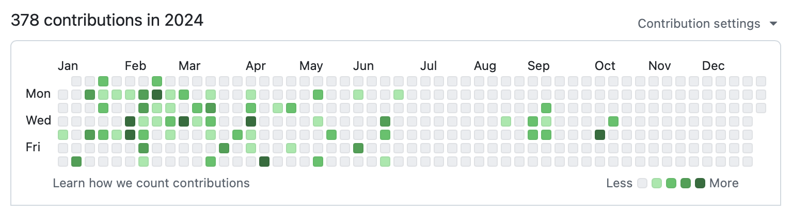

library(ggplot2)
library(lubridate)
import::from(dplyr, mutate, if_else, summarise)
import::from(tidyr, expand_grid)
import::from(forcats, fct_rev)
import::from(RQuantLib, isBusinessDay)In this post I’ll show how to replicate the infamous GitHub contributions graphic. This visualization shows all the days of the year and highlights the most “productive” days in darker colors. It’s similar to a heat map and also known as a cluster map. You can check other examples of this plot in my tutorial post (in Portuguese). In a way, it’s also fairly similar to a “punchcard” plot.

Replicating the plot
Libraries
I use basic tidyverse libraries to replicate the plot. The import::from is a neat way to get only some functions from a large package. This is not strictly necessary but is a good coding practice. Since I use many functions from the ggplot2 and lubridate packages, I import them fully.
For this tutorial I’m using ggplot2_3.5.1.
An important feature of the original plot is that each square has round borders. Unfortunately, drawing these type of squares isn’t very straightforward with ggplot2. To solve this, I draw from a solution posted on StackOverflow, which copies part of the code from the statebins package to make a geom_rtile function.
While the code may seem daunting, using it is very simple.
Code
`%||%` <- function(a, b) {
if(is.null(a)) b else a
}
GeomRtile <- ggplot2::ggproto(
"GeomRtile",
statebins:::GeomRrect, # 1) only change compared to ggplot2:::GeomTile
extra_params = c("na.rm"),
setup_data = function(data, params) {
data$width <- data$width %||% params$width %||% resolution(data$x, FALSE)
data$height <- data$height %||% params$height %||% resolution(data$y, FALSE)
transform(data,
xmin = x - width / 2, xmax = x + width / 2, width = NULL,
ymin = y - height / 2, ymax = y + height / 2, height = NULL
)
},
default_aes = ggplot2::aes(
fill = "grey20", colour = NA, size = 0.1, linetype = 1,
alpha = NA, width = NA, height = NA
),
required_aes = c("x", "y"),
# These aes columns are created by setup_data(). They need to be listed here so
# that GeomRect$handle_na() properly removes any bars that fall outside the defined
# limits, not just those for which x and y are outside the limits
non_missing_aes = c("xmin", "xmax", "ymin", "ymax"),
draw_key = draw_key_polygon
)
geom_rtile <- function(mapping = NULL, data = NULL,
stat = "identity", position = "identity",
radius = grid::unit(6, "pt"), # 2) add radius argument
...,
na.rm = FALSE,
show.legend = NA,
inherit.aes = TRUE) {
ggplot2::layer(
data = data,
mapping = mapping,
stat = stat,
geom = GeomRtile,
position = position,
show.legend = show.legend,
inherit.aes = inherit.aes,
params = rlang::list2(
radius = radius,
na.rm = na.rm,
...
)
)
}Data
For the visualization, we need 365 observations indicating how many contributions were submitted each day of the year. To make the simulated data more realistic I’ll account for holidays and weekends using the RQuantLib package.
On an average workday I assume the number of contributions follows a Poisson distribution with \(\lambda = 6.5\)1. This returns an average of around 4-8 contributions per day and guarantees that the number of contributions will be integer and non-negative. For weekdays or holidays I assumed a small chance (10%) that our worker will have to do some light work.
# Tibble that contains all days of the year
contributions <- expand_grid(
date = seq(as.Date("2024-01-01"), as.Date("2024-12-31"), by = "1 day")
)
# Function to simulate number of contributions conditional on workday
sample_contribution <- Vectorize(function(x) {
if (x == 1) {
# Normal day of work
rpois(1, 6.5)
} else {
# Small chance of working overtime on weekends or holidays
sample(c(0, 1, 2), 1, prob = c(0.9, 0.05, 0.05))
}}
)
contributions <- contributions |>
mutate(
# Gets the number of the week in the year
n_week = week(date),
# Gets weekday number - Starts the week at sunday
n_day = wday(date, week_start = 7),
# Weekday labels for the plot
weekday_label = wday(date, week_start = 7, label = TRUE, abbr = TRUE),
weekday_label = fct_rev(weekday_label),
# Month labels for the plot
month = month(date, label = TRUE, abbr = TRUE),
is_workday = as.numeric(RQuantLib::isBusinessDay("Brazil", date)),
# is_weekday = if_else(n_day == 7 | n_day == 1, 0L, 1L),
n = sample_contribution(is_workday)
)
contributions <- contributions |>
mutate(
n = if_else(n == 0, NA, n),
n_week = if_else(n_day == 1, n_week + 1, n_week)
)Plotting
Base plot
The basic version of this plot is essentially a cluster map. On the horizontal axis, the weeks of the year are plotted; on the vertical axis, the days of each year are plotted. The intensity of the color highlights the amount of GitHub contributions.
ggplot(contributions, aes(n_week, n_day)) +
geom_rtile(
aes(fill = n),
color = "white",
radius = unit(2, "pt"),
width = 0.9,
height = 0.9
)Final plot
To arrive at a more polished version of this visualization I adjusted the scales and tweaked some minor thematic elements. To my surprise this was easier than I had anticipated.
# Find the positions of the month labels
tab <- contributions |>
summarise(nmin = min(n_week), .by = "month")
ggplot(contributions, aes(n_week, weekday_label)) +
geom_rtile(
aes(fill = n),
color = "white",
radius = unit(2, "pt"),
width = 0.9,
height = 0.9
) +
# Highlight the months on the horizontal axis
scale_x_continuous(
breaks = tab$nmin,
labels = as.character(tab$month),
position = "top",
expand = c(0, 0)
) +
# Highlight days of the week on the vertical axis
scale_y_discrete(breaks = c("Mon", "Wed", "Fri")) +
# Adjust color palette
scale_fill_distiller(
palette = "Greens",
direction = 1,
na.value = "gray90") +
# Removes x and y labels
labs(x = NULL, y = NULL) +
# Removes the color legend
guides(fill = "none") +
theme_minimal() +
theme(
panel.grid = element_blank(),
text = element_text(color = "gray10")
)Footnotes
This number was a guess roughly based on my own history of contributions. The actual distribution might be more right-skewed than a Poisson, but for the purposes of this post it works fine.↩︎